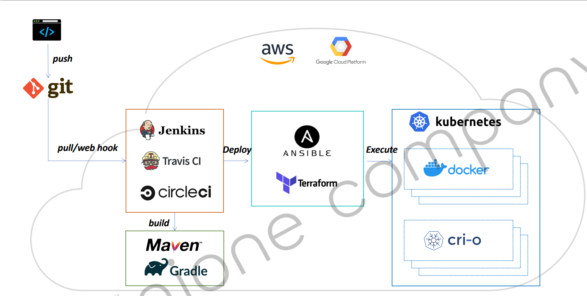
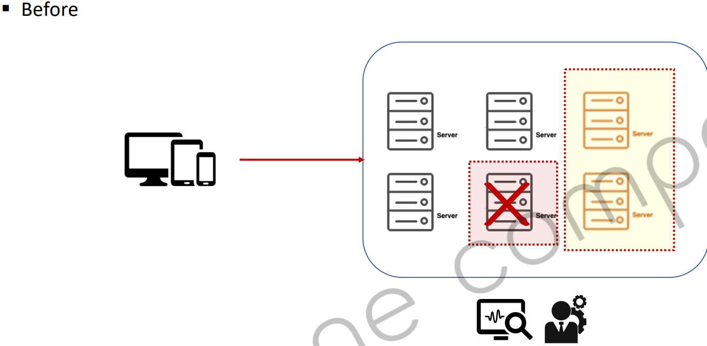
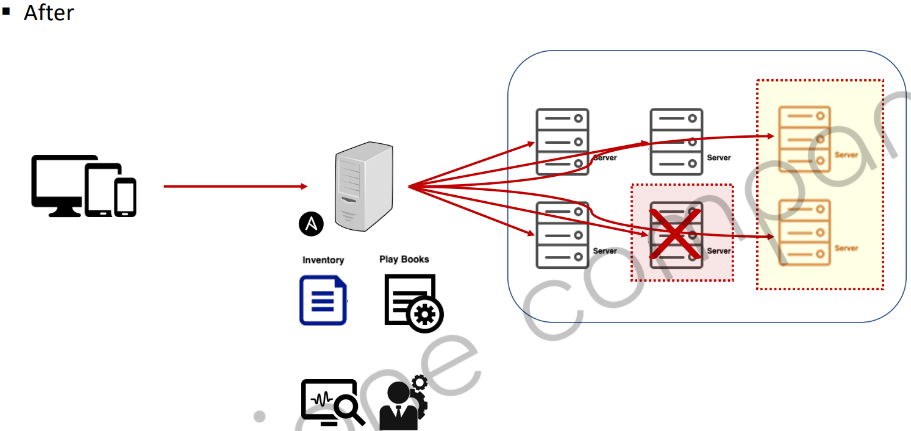
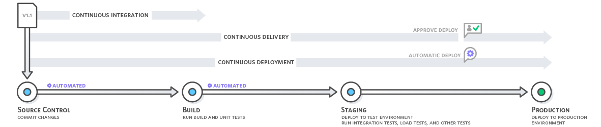

ci-cd_section_01_ch_02_flow

- CI/CD 툴
Jenkins
Travis CI
circle CI
Team City
스프링 부트나 스프링 클라우드로 개발된 형태를 배포하기 때문에 빌드 툴을 사용합니다.
- build 툴
Maven
Gradle
빌드된 결과물을 운영서버에 배포를 해야합니다. 지금 운영하려는 서버가 컨테이너 가상화 형태로 운영될 것이기 때문에 컨테이너 런타임 중에 하나인 Docker를 사용합니다.
도커 컨테이너들의 배포 관리, 시스템 관리를 위해서 오케스트레이션 도구인 Kubernates를 사용합니다.
쿠버네티스는 컨테이너 D를 지원하기 때문에 도커뿐만 아니라 컨테이너 D ,cri-o도 지원합니다.
IaC
시스템,하드웨어 또는 인터페이스의 구성 정보를 파일(스크립트)을 통해 관리 및 프로비저닝
코드에 의해서 인프라스트럭처를 관리하고 생성합니다. 네트워크 설정을 하고 필요없다면 삭제하는 등
커맨드 라인을 입력하거나 웹 브라우저의 GUI를 통해서 조작할 수 있습니다.IT 인프라스트럭처, 베어 메탈 서버 등의 물리 장치 및 가상 머신과 관련된 구성 리소스를 관리
운영 서버에 필요한 데이터베이스나 미들웨어 설치, 프레임워크 설치를 스크립트 코드에 의해서 관리할 수 있다.- 베어메탈 서버
하드웨어에 어떠한 소프트웨어도 설치되지 않은 순수한 하드웨어 자체를 말합니다.
버전 관리를 통한 리소스 관리
버전 관리는 이전 인프라 구성, 환경등이 히스토리로 남아 관리할 수 있습니다.
Terrform vs Ansible
테라폼
테라폼은 클라우드에 상관없이 사용 가능하고, 테라폼 DSL을 사용하기 때문에 별도의 스크립트 언어 문법을 공부해야합니다.
인프라들의 구성을 원하는 형태로 유지하기 위해서 사용할 수 있는 오케스트레이션 도구입니다.
문제가 생겼을 경우에 해당 부분을 리로드 시켜준다거나 삭제하고 새로 만든다거나 그런 작업들을 할 수 있습니다.
필요한 작업을 스크립트 형태로 작성하고 작성된 내용을 바탕으로 시스템의 상태를 변경하거나 유지하는 작업에 사용됩니다.
테라폼도 프로비저닝 도구로 사용자 서버에 대한 엑세스 권환 관리뿐만 아니라 필요한 소프트웨어 설치하는 작업에서도 사용할 수 있습니다.
Ansible 구성 관리 도구로 불리기도 하며, 이미 구성된 서버들의 정보를 변경이나 설정등을 원하는 형태로 바꾸는데 특화되어있습니다.
다양한 서드파티 업체들의 모듈을 쉽게 연동해서 다른 IaC에 대비해 빠르고 가볍게 필요한 작업을 한다는 것이 장점입니다.
Ansible은 구성 관리 도구라고 불리기 때문에 시스템 자체를 교체하는 작업도 가능하지만, 이 문제점을 해결하는 용도로 어떤 문제가 발생했을 때 문제가 왜 발생했는지 그리고 문제를 복구하기 위해서 대응할 수 있는 작업들을 스크립트화해서 기록을 해놓고 작업을 합니다.
요약
테라폼은 인프라를 구축하는 용도로 사용하고, 엔서블은 구축되어있는 서버들의 구성 정보를 변경하거나 관리하는 용도로 사요합니다.
엔서블은 선언적이나 절차적으로 필요한 모든 작업을 구성할 수 있습니다, AWS와 연동이 잘 되기 때문에 S3나 EC2라든가 많은 모듈과 연결해서 인프라를 관리하는 용도로 많이 사용됩니다.
비교 전, 후

관리자가 알게된다면 서버를 증설하여 문제 생긴 서버를 삭제하고, 새로운 서버를 도입하고, 새로운 서버에 연결하면됩니다.

서버 앞에 서버들을 관리할 수 있도록 지정합니다. 관리하는 서버 목록이나 문제가 발생할 경우 어떤 작업을 하는지 절차를 스크립트로 작성합니다.
서버 한 대에 문제가 있을 경우 작성된 스크립트 파일에 의해서 자동으로 서비스가 변경이 될 수 있는 형태로 만들 수 있습니다.
관리자가 직접해야하는 인프라스트럭처 관리에 대한 제어나 관리를 Ansible이나 테라폼이라는 IaC 도구를 통해서 대신 관리한다고 생각하면 됩니다.
정리
클라우드 네이티브 어플리케이션의 구성 요소 중에서 마지막 단계는 CI/CD 입니다. 개발자 및 팀에 의해서 개발된 결과물에 대한 지속적인 통합과 지속적인 배포를 하는 프로세스를 말합니다.
CI-CD는 개발된 어플리케이션을 통합하고 빌드, 테스트, 배포에 이르기 까지 전 과정을 자동화 처리를 담당합니다.
CI 작업에서는 작업된 코드의 컴파일,테스트,패키징 작업이 포함되어있습니다.
CD라는 작업에는 CI에 의해서 패킽지화된 결과물을 다시 개발 서버라던지, 테스트 서버라든지, 운영 서버에 배포하는 작업을 말합니다.
CI는 Continuous Integration이라고 해서 XP프로그래밍에 채택되어 사용하고 있습니다. 주기적으로 빈번하게 배포를 하겠다는 의미로, 레포지토리에서 Merge와 충돌을 해결함에 있어서 가끔하게 되면 문제가 커질 수 있기 때문에 작은 단위로 여러 번 자주 배포하는 것을 강조합니다.
통합을 위한 단계로 빌드,테스트,머지 이런 부분을 자동화하는 것을 얘기합니다.
개발에 대한 생산성을 향상시키고 문제점을 빠르게 발견, 수정할 수 있기 때문에 사용합니다.
CD는 지속적인 배포와 지속적인 제공이라는 두 가지 의미를 가지고 있습니다.
CI에서 통합된 데이터를 검증하고 최종 배포를 수동으로 하는 작업이 딜리버리입니다.
자동으로 전 과정을 배포하는 것을 Deployment라고 합니다.
두 가지를 같이 묶어서 CD라고 간단하게 얘기하기도 합니다.

소스 코드에 만들어진 결과물을 최종적으로 우리가 Deploy(배포)할 때,
우리가 직접 배포 작업을 하는 것(Continuos Delivery.
자동화 처리에 따라 배포되는 것(Continuous Deploy).
마이크로 아키텍처는 하나의 단일 어플리케이션이 아니라 어플리케이션을 구성하고 있는 서비스들을 서로 독립적인 형태로 개발을 합니다.
이렇게 개발된 서비스는 하나의 단일 서버에 통합되어 운영되기 보다는 물리적으로 또는 논리적으로 분산된 서버에서 실행을 하게 됩니다.
개발하는 서비스들의 개수가 많아지는 만큼 수많은 서버를 배포하는 과정이 자동화 되어있지 않다면 상당한 시간이 필요하게 됩니다.
따라서 CI-CD는 마이크로 아키텍처 서비스를 운영함에 있어서 필수요소라고 할 수 있습니다.
CI의 역할
개발자들이 각자 개발한 소스 코드에 의해 소스 컨트롤 매니저 먼트, SCM또는 VCS라고 불리는 형상 관리 시스템에다가 업로드하게 됩니다.
서로 다른 코드의 경우에 단순히 히스토리 관리만 하게 되겠지만, 같은 코드를 여러명의 개발자가 다루게 된다면 코드의 버전 관리를 하는게 필요합니다.
중복되는 부분에 있어서 사용할 코드와, 사용하지 말아야할 코드를 구별하고, 선택하고 최종적으로 충돌이 발생하지 않은 클린 상태의 코드가 마지막 상태여야 합니다.
CI 도구로는 Jenkins라는 도구의 역할에 대해서 알아보면,
SCM,VCS에 저장된 코드를 불러옵니다.
불러온 다음 소스 코드의 빌드라던가 그리고 테스트, 패키징하는 이런 일련된 작업을 처리해주는 도구를 CI도구라고 보면 될거 같습니다.
테스트 단계에서 단위 테스트를 통과한 코드들에 대해서 배포 작업을 하겠다는 규칙을 세우게 됩니다.
단일 테스트가 통과하지 못한 코드가 있다고 한다면, fail을 반환하여 개발자에게 알려주므로 코드의 개선 , 코드의 변경을 요청할 수 있습니다.
코드 전체가 다 통과했을 경우, 이 CI 작업은 빌드를 완료하고 다음 작업으로 넘어갑니다.
CD
CI에서 SCM이나 VCS에 저장된 코드를의 지속적인 통합, 빌드 , 테스트를 거쳐 패키징되는 작업이 진행된 다음 배포하는 과정을 말합니다.
Jenkins 도구를 사용하여 CI에 해당하는 부분도 커버하고, 결과물을 압축하거나 패키징 되어있는 결과물을 가지고 원하는 환경에 배포하는 작업도 할 수 있습니다.